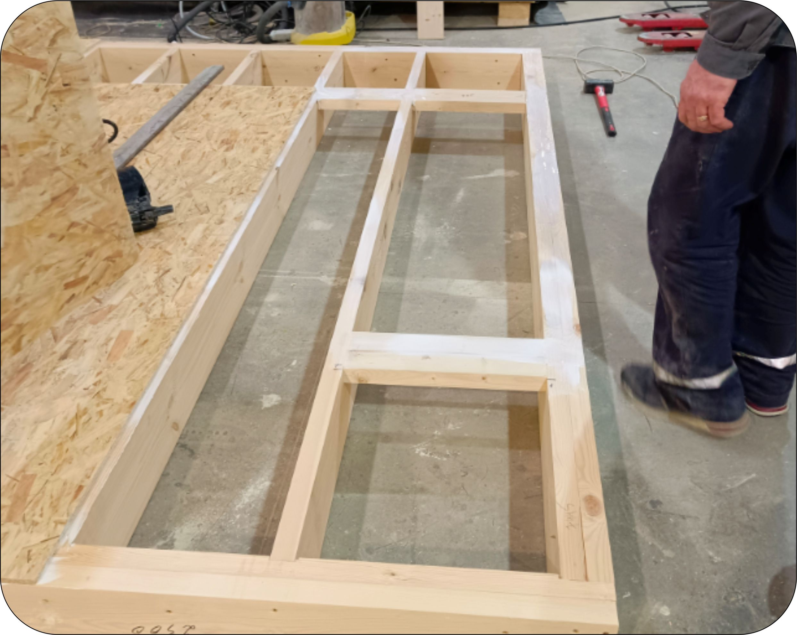
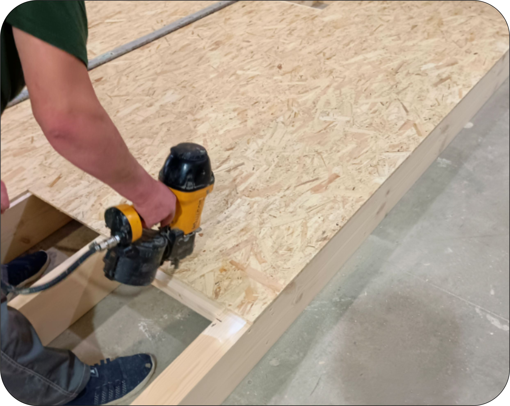

Раздел КС.ПП.
Операция 2.1.2
Укладка ОСБ на каркас панели
Необходимая документация
🔧 Производимые операции
-
Сверить количество и габариты полученных заготовок ОСБ с чертежом. Произвести контрольные замеры геометрии каркаса панели. Спланировать порядок укладки заготовок на каркас.

-
Нанести клей ПВА-М на участок каркаса, укрываемый листом ОСБ. Уложить ОСБ, выровнять по каркасу, закрепить кровельными гвоздями 45мм с шагом 350-400мм к каркасу панели. Крепить от одного края к противоположному, чтобы лист заготовки равномерно разглаживался по длине и не давал коробления-прогиба по центру.


-
Повторить предыдущую операцию для каждой заготовки ОСБ.

-
Проверить панель на наличие выступающих шляпок гвоздей. Если такие найдутся, то забить гвоздь до конца.

✅ Контрольные параметры
По факту контрольных замеров ставится отметка в паспорте ОТК.
🛠️ Необходимый инструмент и оборудование
📦 Расходные материалы
📷 Фотоальбом операции

Отсканируйте QR-код для просмотра фотоальбома с примерами выполнения данной операции
Открыть фотоальбом